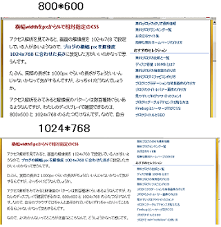

ブログの横幅は視野領域の狭い方が見やすい
サイトのレイアウトの横幅を広くとってしまうと、視野の領域が左右に広がってしまい、眼球を左右に動かさなくてはいけなくなるので閲覧しにくくなります。
どの環境でも同じように表示されるようにする場合、ブラウザの違いによる修正がメインになるとは思いますが、モニターサイズの違いや画面の解像度の設定も大きな要素といえます。
画面解像度によるブログの見やすさ違い
画面の解像度を高く設定している人が、横幅widthをCSSで相対指定しているブログに訪問した場合、文字サイズは小さくなってしまうのに対し、ブログレイアウトで横幅が広くなってしまうため、妙に横に長くなってしまって見にくくなってしまいます。
シーサーでブログを作成した場合は、デフォルトのレイアウトが「絶対指定」になっているため、それほど気にすることはないと思いますが、「相対指定」でカスタマイズしてしまった際は、閲覧環境によって見やすい人と見にくい人が出てきてしまうようです。
今後、液晶モニターのワイド化が進むにつれ、レイアウトを相対指定で指定するのは困難になってくるかもしれません。
例えば、相対指定でwidth幅を指定した場合、画面の解像度で800x600 の場合と1024x768 の場合とでは、1024の方が若干微妙に横長になってしまいます。

比率は「4:3」で変わらないので、単にwidth幅が「800」から「1024」に増えたことによるものですが、横幅が広くなっても文字サイズが14pxで変わらないため、余白が生じてしまうことになります。
今後、さらに解像度の高いモニターが主流になっていくと、width幅を相対指定でレイアウトを指定するのは困難になってくるものと思われます。
なので、width幅を800px程度に固定してしまい、1024pxで閲覧した場合には200px程度の余白が生じるよいうな形で最適化するのがよいと思われます。今後、さらに解像度の高いモニターが主流になっていけば、1000px程度で固定してしまうのがよいかもしれません。
理想的なブログのレイアウトとしては、ぼんやり見てても、コンテンツの内容が見渡せるぐらいの大きさの楽だと思うので、その程度に指定しておくとよいでしょう。
- ブログの横幅 px と画面の解像度
ブログのスタイルシートで横幅を何 px がいいのかなって思うんですけど、指定しない方がいいという人もいたり、スクロールしない程度の方がいいという人もいたりで人それぞれのようです。モニターの方もワイドな... - 見やすいブログやサイトのフォント
ブログのスタイルシートでフォントを指定すると意図したフォント順で表示されるようになりますが、見やすいサイトやブログではどのようなフォントを使用しているのでしょうか。前の記事でおしゃれフォントの記事を書...